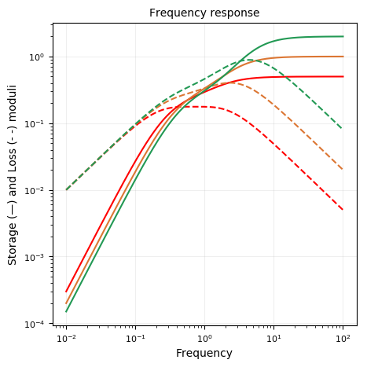

Burgers (Liquid)
using RHEOS
include("plotmodel.jl");BurgersLiquidModel name: burgerliquid
Free parameters: η₁, k₁, η₂ and k₂
___
_________| |________
___ | _|_| η₂ |
_____| |________╱╲ ╱╲ ╱╲ _______| |____
_|_| ╲╱ ╲╱ ╲╱ | |
η₁ k₁ |____╱╲ ╱╲ ╱╲ ____|
╲╱ ╲╱ ╲╱
k₂Constitutive equation
\[\sigma(t) + p_1 \frac{d \sigma(t)}{dt} + p_2 \frac{d^2 \sigma(t)}{dt^2} = q_1 \frac{d \epsilon(t)}{dt} + q_2 \frac{d^2 \epsilon(t)}{dt^2}\]
where $p_1 = \frac{\eta_1}{k_1}+\frac{\eta_1}{k_2}+\frac{\eta_1}{k_2}$, $p_2 = \frac{\eta_1 \eta_2}{k_1 k_2}$, $q_1 = \eta_1$ and $q_2 = \frac{\eta_1 \eta_2}{k_2}$.
Relaxation modulus
\[G(t) = \left[ \left(q_1 - q_2 r_1\right) e^{-r_1 t} - \left(q_1 - q_2 r_2\right) e^{-r_2 t} \right]/A\]
where $r_1 = (p_1-A)/2p_2$, $r_2 = (p_1 +A) /2p_2$, and $A = \sqrt{p_1^2 - 4p_2}$
Creep modulus
\[J(t) = \frac{1}{k_1} + \frac{t}{\eta_1} + \frac{1}{k_2} \left(1-e^{-k_2 t/\eta_2}\right)\]
Storage modulus
\[G^{\prime}(\omega) = \frac{p_1 q_1 \omega^2 - q_2 \omega^2 (1-p_2 \omega^2)}{p_1^2 \omega^2 + (1-p_2 \omega^2)^2}\]
Loss modulus
\[G^{\prime \prime}(\omega) = \frac{p_1 q_2 \omega^3 + q_1 \omega (1-p_2 \omega^2)}{p_1^2 \omega^2 + (1-p_2 \omega^2)^2}\]
Qualitative behaviours of the moduli
models = Vector{RheoModel}()
# plot moduli for varying k₁
for k in [0.5, 1.0, 2.0]
push!(models,RheoModel(BurgersLiquid,(η₁ = 1, k₁ = k, η₂ = 1, k₂ = 1)))
end
plotmodel(models);

Reference
Findley, William N., and Francis A. Davis. Creep and relaxation of nonlinear viscoelastic materials. Courier Corporation, 2013.